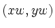
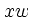
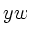
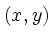
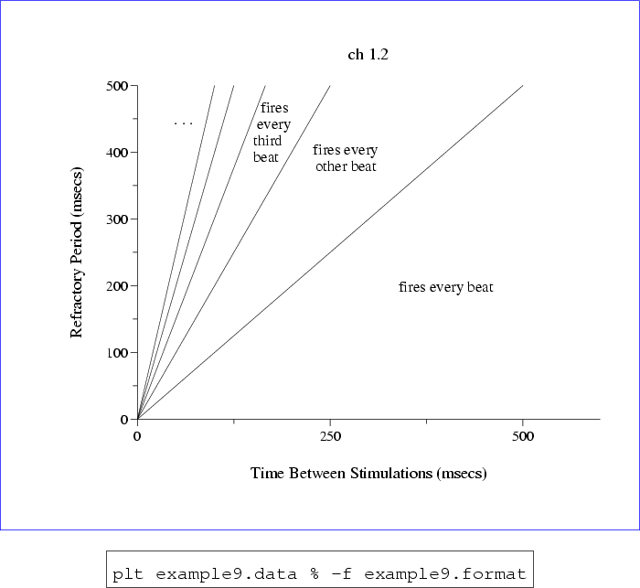

The -hl and -vl options allow you to create horizontal and vertical labels anywhere within your plot, using window coordinates, , to specify the location for the label; and a text box coordinate, tbc (e.g., ``CB'', ``RT'', etc.), to specify which point in the text box should coincide with . These options take their arguments as follows:
-hl xw yw tbc nlines file
-vl xw yw tbc nlines file
All arguments are optional (but if a specified argument follows an omitted argument, you must supply a ``-'' as a placeholder for the omitted argument). If  or  is omitted, the missing coordinate is set to that of the RC point of the previous label, allowing labels to be concatenated (see below). If tbc is omitted, the default value is ``CC'', i.e., the label will be centered on . If specified, nlines is a number indicating how many input lines are to be used to form the label (line breaks are reproduced by plt as they appear in the input).
If file is specified, the text for the label is read from the first nlines lines of file. If nlines is not specified, the entire contents of file are used for the label.
If file is not specified, the next nlines lines of the plt -f format file or plt -F format string form the label; in this case, if nlines is also not specified, the label is formed from only one line (the next line) of the format file or string.
The -L and -l options can be used in a similar way to create horizontal labels. The arguments for these options are supplied as follows:
-L xw yw tbc text
-l x y tbc text
As for -hl, the tbc argument is one of the twelve named text box coordinates. The text argument is the string to be used for the label; it may include whitespace, but it ends at the end of the line on which it appears. The difference between -L and -l is that the former takes window coordinates , and the latter takes data coordinates .
These options are demonstrated in figure 8.1, which uses the format file example9.format, containing:
xa 0 600 ya 0 500 x Time Between Stimulations (msecs) y Refractory Period (msecs) # Note: the next line ends with a lower-case L, not a numeral 1! p 0,1,2,3l t ch 1.2 l 400 200 CC fires every beat L .1 .9 CC . . . hl .45 .81 CC 2 fires every other beat hl .25 .92 - 4 fires every third beatand the data file example9.data, containing:
0 0 500 500 0 0 250 500 0 0 166 500 0 0 125 500 0 0 100 500
|  |
In figure 8.1, notice especially how whitespace at the beginning of two lines in the second hl option's text is preserved in the plot. Note also how both data and window coordinates are used with several plt options. The next chapter describes several more options that can be used in the same way. Options -A, -B, -C, -D, -L, -hl, -vl, -le, and -lp accept window coordinates; options -a, -b, -c, -d, and -l accept data coordinates. For now, note that you often have a choice of using data or window coordinates, since many of these options come in two varieties: upper-case options that use window coordinates, and similar lower-case options that use data coordinates.